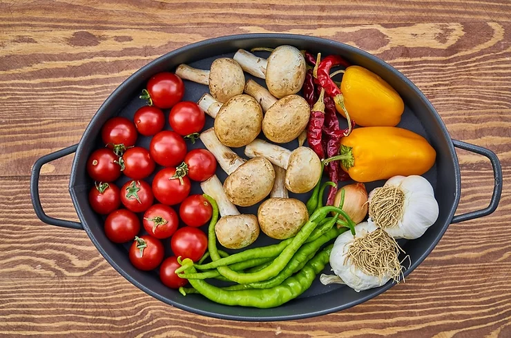

Hábitos com saúde
Não dá para negar que uma alimentação de qualidade
é essencial para a manutenção da saúde e o aumento da longevidade.
Entre outros benefícios, os bons hábitos alimentares ajudam a controlar o peso,
melhoram a imunidade e previnem várias doenças.
Para completar, é daí que vêm as vitaminas e
os antioxidantes naturais, capazes de nutrir o organismo e combater os radicais livres.
É isso mesmo: os alimentos são santos remédios! Mas é preciso saber usá-los a seu favor.

6 hábitos alimentares para se tornar mais saudável
1. Beba bastante líquido durante o dia
Beber água é um hábito alimentar importantíssimo!
O líquido hidrata o corpo de dentro para fora, controla a temperatura corporal,
otimiza o trânsito intestinal e, ainda por cima, ajuda a dar um up na beleza da pele,
das unhas e dos cabelos. O ideal é tomar de 6 a 8 copos de água todos os dias,
o que equivale a cerca de 2 litros. Se não é tão fã da água pura,
você pode complementar a ingestão de líquidos
com água de coco, chás e sucos naturais sem açúcar, ok?

2. Invista em alimentos orgânicos e integrais
A lógica é simples: quanto mais natural for sua alimentação, melhor! Por isso,
é interessante consumir alimentos orgânicos, sem aditivos químicos.
Os integrais também são bem-vindos, uma vez que apresentam maior quantidade de fibras,
aumentando a sensação de saciedade, colaborando para o controle do peso e regulando a taxa
de glicose no sangue.

3. Evite ficar muito tempo sem comer
Nem mesmo a rotina agitada e a agenda cheia devem ser motivos
para você pular as refeições, combinado? Encontre tempo para se alimentar adequadamente
no café da manhã, no almoço e no jantar. Entre as refeições principais,
faça pequenos lanches, com frutas e snacks saudáveis, mantendo uma distância de 3 horas entre uma refeição e outra. O que você deve entender desde já é que pular refeições
é uma prática muito prejudicial, pois desacelera o metabolismo
e descontrola o apetite. Pode reparar: quando ficamos muito tempo sem comer,
tendemos a exagerar na refeição seguinte. Melhor manter o equilíbrio sempre, não concorda?
4. Diminua o consumo de sal
Considerando que o excesso de sal é extremamente prejudicial para a saúde,
trate de evitar o consumo excessivo de alimentos muito salgados!
Comer muito sal aumenta o risco de hipertensão arterial e de doenças cardiovasculares,
além de provocar retenção de líquidos e inchaço corporal.
É preciso moderar até mesmo no tempero da salada, viu?
5. Fuja das bebidas alcoólicas
Se você pretende se alimentar melhor, a ingestão de álcool também deve ser evitada.
Além de não fornecem nutrientes importantes para o organismo, as bebidas alcoólicas
são muito calóricas, favorecendo assim o ganho de peso.
Como se não bastasse, o álcool pode prejudicar o funcionamento do fígado, bem como
desencadear a hipoglicemia se consumido em excesso.
6. Coma mais frutas, legumes e verduras
Você já ouviu falar que prato saudável é prato colorido?
Pois essa afirmação faz todo sentido se considerarmos a variedade de cores das frutas,
das verduras e dos legumes. Assim, para completar nossa listinha de hábitos saudáveis, aumente as cores presentes nas refeições ao acrescentar mais desses ingredientes no seu cardápio!
Extremamente nutritivos, esses alimentos são ricos em vitaminas
e sais minerais essenciais para a saúde. Só para você ter uma ideia dos benefícios,
as frutas, os legumes e as verduras atuam como coadjuvantes
no controle do peso e colaboram no controle da taxa de açúcar no sangue.
Além disso, são ricas fontes de fibras e antioxidantes.
Agora que você já está pronto para adotar hábitos alimentares mais saudáveis, que tal compartilhar este post com seus amigos nas redes sociais e inspirá-los a também mudar seus hábitos à mesa?